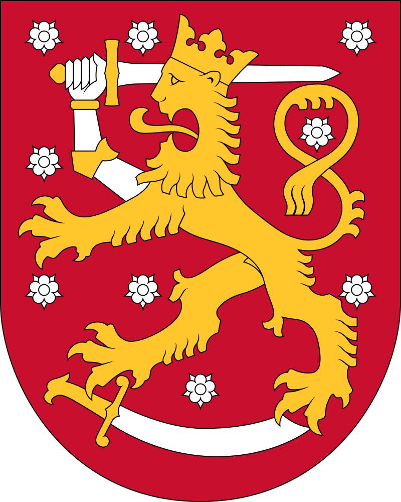
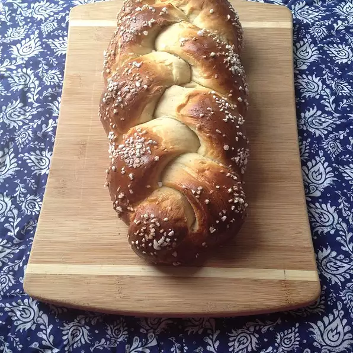

Finland
Pulla


A Finnish sweet bread that uses cardamom and a ton of flour! The bread is braided with three or more strips intertwined into each loaf.
Ingredients
- Milk: 2 cups
- Water, warm (110°F/45°C): 1/2 cup
- Active Dry Yeast: 1 package (0.25 oz)
- White Sugar: 1 cup
- Salt: 1 teaspoon
- Ground Cardamom: 1 teaspoon
- Eggs, beaten: 5
- All-Purpose Flour: 9 cups
- Butter, melted: 1/2 cup
- White Sugar, to sprinkle: 2 teaspoons
Steps
- Warm the milk in a small saucepan until it bubbles, then remove from heat. Let cool until lukewarm.
- Dissolve the yeast in the warm water. Stir in the lukewarm milk, sugar, salt, cardamom, 4 eggs, and enough flour to make a batter (approximately 2 cups). Beat until the dough is smooth and elastic.
- Add about 3 cups of the flour and beat well; the dough should be smooth and glossy in appearance.
- Add the melted butter or margarine, and stir well. Beat again until the dough looks glossy. Stir in the remaining flour until the dough is stiff.
- Turn out of bowl onto a floured surface, cover with an inverted mixing bowl, and let rest for 15 minutes. Knead the dough until smooth and satiny.
- Place in a lightly greased mixing bowl, and turn the dough to grease the top. Cover with a clean dishtowel. Let rise in a warm place until doubled in bulk, about 1 hour. Punch down, and let rise again until almost doubled.
- Turn out again on to a floured surface, and divide into 3 parts. Divide each third into 3 again. Roll each piece into a 12 to 16 inch strip. Braid 3 strips into a loaf. You should get 3 large braided loaves. Lift the braids onto greased baking sheets. Let rise for 20 minutes.
- Brush each loaf with egg wash and sprinkle with sugar.
- Bake at 400°F (205°C) for 25 to 30 minutes. Check occasionally because the bottom burns easily.
Source: Moules Frites